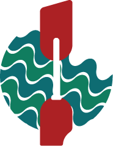

Overview
Purpose
Here at Specialty Rafting, we bring the best experience to all adventerous travelers looking for their next thrill! All the while, we take the necessary precautions, teach life-saving techniques, and bring you the best white-water rafting experience Glendwood Canyon has to offer!
Our purpose is to cater to a wide range of individuals seeking the thrill of white-water rafting. This site will clearly demonstrate the ease of access and affordability that our company has to offer. This site will bring in an exponential amount of traffic to our local denizens and will soon create a well-known business and tourist location for future endeavors. The first and foremost benefit of this site will be the exposure.
As for the structure of our site for some visually impaired individuals, we can have an alternate color setting/scheme to improve visibility, or have text-to-speech audio. This site will be mainly viewed on laptop and computer screens.
Audience
We want adventerers like you! We cater to the minimum age of 9, and the maximum age of 86. Families are encouraged! This experience is for all! We are also capable of entertaining several forms of parapalegia, disabled, and amputated individuals recomended for our begginers white water stretch. However, if the individual does pass our regulated survival competence rating to a certain degree, they may upgrade to a maximum difficulty rafting experience of 6. The possibilities are endless!
The audience visiting this site will be familial, individual, and unfortunately conditioned patrons. We need to preface our site as welcoming and care-giving for our unfortunates. Choosing inviting cooler colors with an exciting and brash accent to our site, we will communicate our openness and willingness to work with our patrons as well as showing an air of excitement and adventure. The fonts will work in the same way as the colors between our legible information and the occasional push of flair.
Branding
Website Logo
Style Guide
Color Palette
Palette URL: https://coolors.co/ffffff-ac2020-127d5f-096b72
| Primary | Secondary | Accent 1 | Accent 2 |
|---|---|---|---|
| [#096B72] | [#127D5F] | [#AC2020] | [#FFFFFF] |
Typography
Heading Font: Jaro
Paragraph Font: Zillow Slab
Normal paragraph example
The best Whitewater Rafting in Colorado, Specialty Rafting Company offers rafting on the Colorado and Roaring Fork Rivers in Glenwood Springs. Since 1974, we have been family owned and operated, rafting the Shoshone section of Glenwood Canyon and beyond.
Colored paragraph example
Trips vary from mild and great for families, to trips exclusively for physically fit and experienced rafters. No matter what type of river adventures you are seeking, White Water Rafting Company can make it happen for you.
Navigation
Site Map
Wireframes
Home